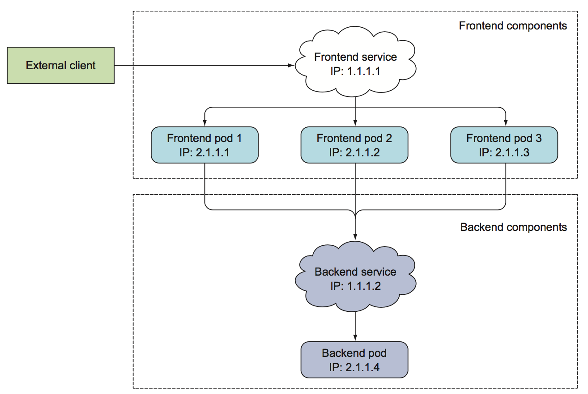
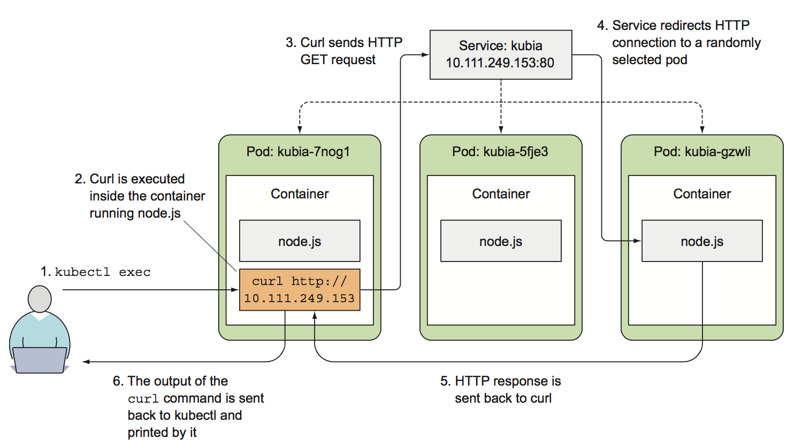

什么是 service
service 是一种资源对象，可以为一组功能相同的pod提供单一的接入点；当 service被建立之后，它的IP地址和端口都不会因为后面pod的变化而改变； 比如 一组Web前端服务和一组数据库后端服务：
外部客户端无须关心服务器数量而连接到pod；
前端的pod需要连接后端数据库；而数据库也运行在pod中，它可能在集群中漂移，导致IP变化，当后端数据库发生漂移后，无须对前端pod重新配置；
为前端pod创建service， 并将其配置成可以在集群外部访问，可以暴露一个IP，让外部客户端可以访问到pod； 同理，为后端数据库创建 service;如下图，内部和外部服务，通常使用service链接到pod： 
服务创建
除了使用kubectl expose ... 命令，也可以使用yaml来创建service,比如： 创建一个名称为 kubia 的服务， 该服务将在端口80上接收请求流量，并转发到后端pod的8080端口，如何关联 pod 呢？通过 selector标签选择器；
#svc.yaml
---
apiVersion: apps/v1beta2
kind: ReplicaSet
metadata:
name: kubia
spec:
replicas: 3
selector:
matchLabels:
app: kubia
template:
metadata:
labels:
app: kubia
spec:
containers:
- name: kubia
image: luksa/kubia
imagePullPolicy: IfNotPresent
ports:
- name: http
containerPort: 8080
---
apiVersion: v1
kind: Service
metadata:
name: kubia
spec:
ports:
- port: 80
targetPort: 8080
selector:
app: kubia
创建并测试服务：
kubectl create -f svc.yaml
kubectl get svc
从内部集群测试：
kubectl exec podname -- curl clusterIP
PS
双横线代表命令的结束，横线后面代表的是在pod中执行的命令

会话亲和性
如何使同一个客户端IP访问同一个service中的pod，而不是轮询访问？
apiVersion: v1
kind: Service
spec:
sessionAffinity: ClientIP
...
sessionAffinity 的默认值是 None，可以配置成 ClientIP
同一个服务暴露多个端口
创建一个 service可以暴露多个端口，比如pod监听两个端口，最常见的是 HTTP 8080 端口和HTTPS 6443端口,可以使用一个service从端口80和443转发到pod端口的8080和6443， 在这种情况下，无须创建两个不同的服务。通过一个集群IP， 使用一个服务就可以将多个端口全部暴露出来。 PS
在创建一个多端口的服务时，必须给每个端口指定名字 比如创建一个service， pod的8080端口被映射到80， pod的6443被映射到443，如下配置：
apiVersion: v1 kind: Service metadata: name: kubia spec: ports: - name: http port: 80 targetPort: 8080 - name: https port: 443 targetPort: 6443 selector: app: kubia对应的pod配置如下：
apiVersion: v1 kind: Pod spec: containers: - name: kubia ports: - name: http containerPort: 8080 - name: https containerPort: 8443改造service，使用命名端口方式映射后端pod：
apiVersion: v1 kind: Service metadata: name: kubia spec: ports: - name: http port: 80 targetPort: http - name: https port: 443 targetPort: https selector: app: kubia使用命名端口的好处什么？
即使pod的端口改变了，也无须更改service的spec。
endpoint
service 并不是和pod直接相连的， 相反，有一种资源介于两者之间----- 它既是Endpoint资源。 通过kubectl describe svc kubia，可以看到 endpoint； Endpoint 就是暴露一个服务的IP地址和端口列表， Endpoint 资源和其它 Kubernetes 资源一样， 所以可以使用 kubectl 来获取它的基本信息：
$ kubectl get endpoints kubia -o yaml
尽管在service的spec中定义了pod选择器，但在重定向流量时不会直接用它，而是，选择器用于构造IP和端口列表， 并存储在Endpoint资源中。当客户端连接到服务时，服务代理选择这些IP和端口中的一对，并将其进行转发给后端pod；
expose
使用 kubectl expose 命令将资源暴露为新的Kubernetes Service。资源包括：
pod（po），service（svc），replication controller（rc），deployment（deploy），replica set（rs）
基本用法如下：
$ kubectl expose (-f FILENAME | TYPE NAME) [--port=port] [--protocol=TCP|UDP] [--target-port=number-or-name] [--name=name] [--external-ip=external-ip-of-service] [--type=type]
示例：
为RC的nginx创建service，并通过Service的80端口转发至容器的8000端口上。
kubectl expose rc nginx --port=80 --target-port=8000
kubectl expose pod pod-nginx --port=444 --name=frontend
kubectl expose service nginx --port=443 --target-port=8443 --name=nginx-https
思考
如何把服务暴露给外部客户端呢？